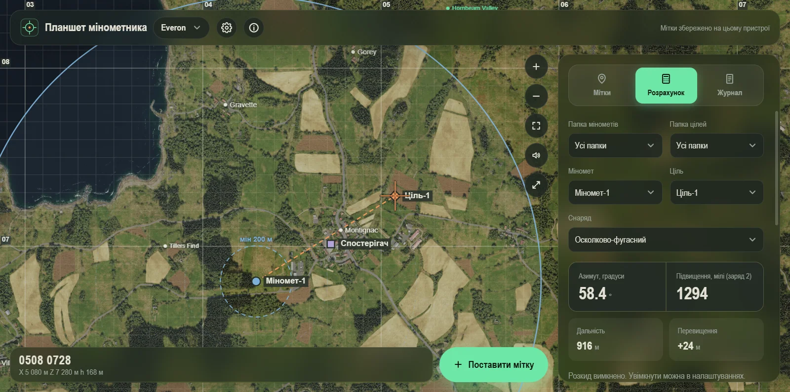
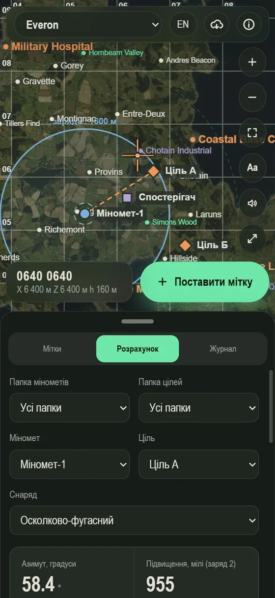

Windows
Повна версія: власні карти, обмін мітками з телефоном по Wi-Fi. Інсталятор оновлюється сам.
Балістичний калькулятор для мінометників Arma Reforger: карта, мітки, азимут і підвищення за секунди. На ПК, Android та iPhone.


Безкоштовно, без реклами.
Повна версія: власні карти, обмін мітками з телефоном по Wi-Fi. Інсталятор оновлюється сам.
Окремий застосунок: карти вже всередині, працює без інтернету й без ПК.
Нічого не ставити: відкрийте й додайте на головний екран. Карту можна зберегти для роботи без інтернету.
Коротко для кожної платформи.
Щоб оновитись, завантажте нову версію з цієї сторінки й встановіть поверх.
Тільки те, що потрібно для розрахунку, без зайвого.